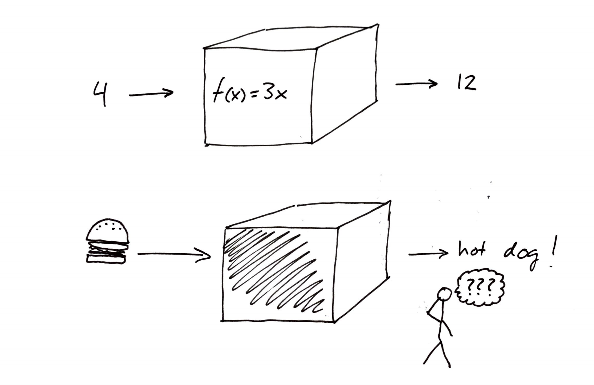

Énoncé du sujet¶
Intro JSanf¶
L’intelligence artificielle est un sujet d’actualité de haute importance avec les nombreuses avancées technologiques qui se font depuis les dernières années avec des avancés comme la conduite automatique par la compagnie Tesla ainsi que le Neuralink. L’intelligence artificielle ou l’IA nous entourent dans notre vie que se soit sur notre cellulaire, sur notre ordinateur et même nos automobile. Quel est le fonctionnent de ce processus et comment peut-il être utilisé afin de bénéficier l’être humain?. Pour tenter de répondre à cet question, nous allons écrire un programme qui permet de faire de l” Optical Character Recognition ou OCR qui consiste à lire un chiffre écrit à la main et retourner une réponse grâce à un entraînement sur l’ordinateur nommé Supervised Learning. Pour en découvrir plus sur ce processus, nous allons aussi voir l’impact d’un entraînement varié sur le modèle en changeant l’écriture de l’humain pour voir si cela constitue un biais.
Mise en contexte¶
L’intelligence artificielle est au coeur de l’actualité depuis près d’une décénie. Elle est dejà entrain de changer le monde , et ce, dans plusieurs secteurs incluant la finance, la sécurité, la santé, la justice criminel, les moyens de transports, la publicité, et plusieurs autres.
Que ça soit des décisions sur l’investissement d’un portefeuille d’un individu ou de la détection de fraude en identifiant des anormalités, l’intelligence artificielle est de plus en plus présente dans le secteur de la finance.
Du côté de la sécurité, un excellent exemple serait Project Maven un projet d” intelligence artificielle du Pentagon des États-Unis qui est capable de passer à travers plusieurs informations, vidéos et photos pour détecter des dangers potentiels.
L’intelligence artificielle est très importante dans la santé avec des compagnies comme Merantix, une compagnie Allemande qui on permis de detecté des ganglions lymphatiques ainsi que des problèmes liés à ceux-ci tel que des lésions ou des cancers. L’étude de séquence d’ADN par l’intelligence artificielle permet de détecter des maladies génétiques et des cancers.
Un des domaine le plus importants en ce moment serait, les moyens de transport avec plus de $80 milliard investi dans des véhicule de conduite autonome entre 2014 et 2017. L’intelligence artficielle dans ce domaine aurait pour but de diminuer grandement l’erreur humaine dans les transports et réduire à presque zéro les accidents si la majorité des autos était intelligente. De plus, cela réduirait aussi grandement le traffic grâce à la communication entre les automobiles intelligents. La compagnie Tesla en est déjà très avancée pour ce qui est de leur auto intelligente.
Comme on peut le voir, cette technologie a permis de multiples avancées dans des domaines où il se fait extrêmement difficile de modéliser la problématique selon une fonction mathématique particulière. L’analyse de language en est un bon exemple. Le travail ne peut être modélisé par une seule fonction mathématique puisque les conditions souvent changeantes nécessiteraient une multitude de fonctions différentes pour chaque environnement qui n’est pas réaliste. La solution est plutôt « d’entraîner » un ordinateur à comprendre le monde qui l’entoure. Pour continuer avec l’exemple de l’analyse du language, une solution serait de fournir à l’ordinateur une immense quantité d’exemples et de solutions afin qu’il développe la capacité de prédire la solution à de nouveaux exemples. GPT-3, un nouveau modèle d’intelligence artificielle produit par OpenAI, a permis à des développeurs de créer un programme lui même capable de programmer à partir de demandes spécifiques faites par un utilisateur.
Malgré les avancées incroyables que l’intelligence artificielle a déjà permis et continuera de permettre dans le futur, elle n’est pas sans ses inconvénients. Au courant des dernières années, les systèmes intelligents sont de plus en plus reconnus coupables de discrimination envers certains groupes d’individus. Une étude réalisée par le NIST à étudié le taux d’erreur de différents programmes de reconnaissance faciale en fonction des différences de sexe et d’ethnicité des individus sur les photos analysées. L’étude présente des taux d’erreur jusqu’à cent fois plus élevés pour des personnes d’origine asiatique ou africaine lorsque comparé à des personnes d’origine européenne [nistbias]. Le taux d’erreur est aussi plus élevé chez les femmes que chez les hommes, et ce, peut importe l’origine.
Un autre résultat important de cette étude est que le taux d’erreur associé à la reconnaissance de personnes asiatiques n’est pas présent dans des programmes réalisé dans des pays d’Asie. Cette observation permet de déduire l’un des plus grands problèmes liés à l’intelligence artificielle: le biais.
Contrairement à une fonction mathématique qui transforme un chiffre de manière définie, les procédés menant à la reconnaissance faciale sont beaucoup plus flous et souvent très mal compris. Plusieurs considèrent les programmes entraînés comme des «boites noires». Il est difficile de prédire ce qui sortira de la boîte lorsque l’on y insère quelque chose, et il est encore plus difficile de comprendre pourquoi le programme prend certaines décisions plus que d’autres.
